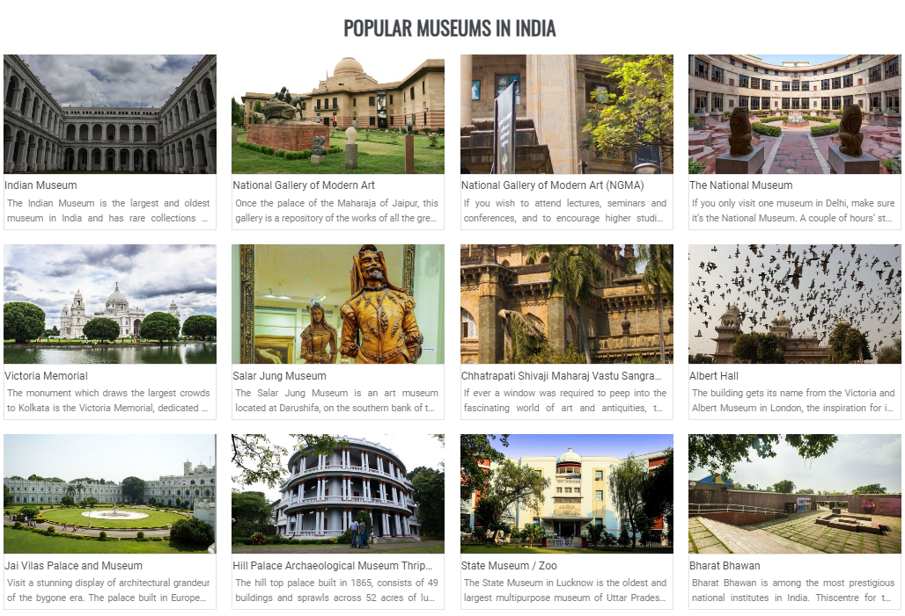

Having museums is a global concept that’s common to every country. It narrates the story of the past and showcases how the humanity has evolved in hundreds of years. India displays an extensive bouquet of resources that sheds light on its rich culture and heritage of the past. Their significance is profound as it helps preserve objects and materials of cultural, historical and religious importance and showcases it to public in an intriguing manner that piques interest, offers amusement, and is indispensable for research and educational purposes.
Museums in India in house a large collection Indian sculptures and objects of cultural, historical and religious importance to gaze upon. Explore this inevitable part on your journey to discover India through extraordinary selection of exhibits.
